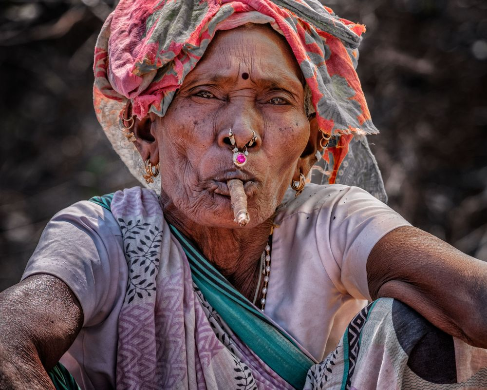

ADILABAD TATTOO STUDIO
INTRODUCTION
Adilabad "The Gateway of South India." Adilabad district is a district located in the northern region of Telangana. Its comprises of a village called Waghapur where a tribe called Thottis which does craft of Tattoo. The Thotti are a small group of tribal people who live in southeast India. Most have integrated into Indian society and become Hindus. Many now work as agricultural laborers. A smaller portion of the Thotti people still lives as a tribal people in the forests of Telangana. Thotti women were traditionally tattoo artists for the larger Gond tribes. Thotti tribe has many motif and each motif has significance. In ancient times the tattoos were made by them to cover there bodies which now has become part of there parampara in which tattoo are made on women as she passes her life such as puberty, marriage and childbirth. The tattoo are yet valued for their powers of healing and due to its ritualistic significance it is yet passed on from generation to generation. .
TRIBES OF ADILABAD
The tribes of India constitute 8.2% of the total population. Our country has the largest number of tribes as compared to any other country. There are a variety of groups of tribes..Tribes of Adilabad hidden behind the infamous backwardness of Adilabad is a treasure trove of tribal culture waiting to be explored. The district has enormous potential for culture tourism thanks to its nearly 3.5 lakh Adivasi population, the dominant being the Gonds and Kolams, who continue to latch on to its glorious traditions.
Tribal people are a grossly misunderstood segment of society as they are considered superstitious and their poverty is often confused with lacking in culture. In reality, the way of life of the Adivasis is one of absolute consonance with nature and it is this aspect that can be seen in tribal villages in this district.

HISTORY OF TATTOOS
Click here
"The modern tattoo has been inspired by godna,We need to save
a fast-disappearing art form before it is too late."
PRESENT STATUS
From marks of status to a kind of jewellery, tattoos are part of a centuries-old Indian tradition. As the country's urban youth takes to body art, youngsters from tribal communities are abandoning it because it reveals their origins and could lead to discrimination. Over the past decade, tattoos have become a fashion statement among urban Indian youth, but body art has been practiced for centuriesu/ in many Indian communities. Known as godna, a term widely used among tribals in central and eastern India, it serves different purposes in different communities, as a journey to villages in Jharkhand and Bihar revealed.
PROCESS OF GODNA
The Adivasi women were tattoo lovers centuries before the modern world found something fashionable in it. They use all herbal materials for their tattooing. The methods they use for tattooing are very eco-friendly and therapeutic (safe method - handpoking). They make the kajal which is used to first draw the design , from erandi ka tel (caster oil) which a completely natural product. Then after they make the design on the skin , they make the permanent tattoo by handpoking using a needle which is completely sanitized and hygienic. They use one needle to do 3 TATTOOS. After that needle is used they throw it away. It might take hours to finish one design. That is how it's all done.